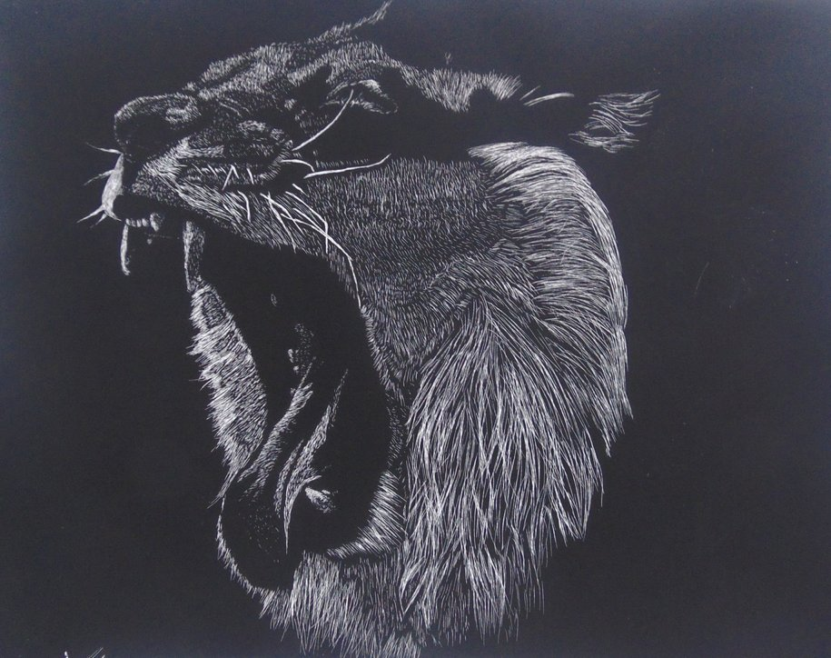
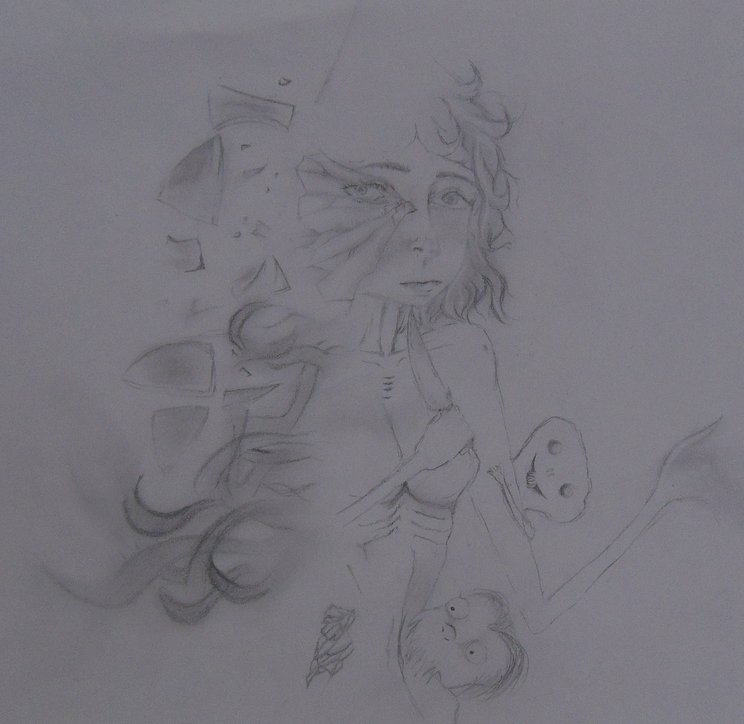
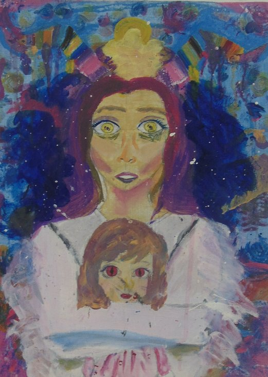
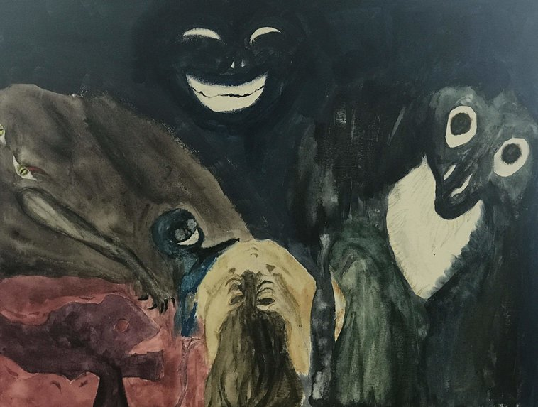

Appearance and Vulnerability
“Character is like a tree and reputation its shadow. The shadow is what we think it is and the tree is the real thing.” ― Abraham Lincoln

Depression
"No one wishes to have dark days, sleepless nights, grumpy mornings and this endless dark tunnel with no sign that it ever ends. Depression is not a choice." - Unknown

Maniac
“Was I ever crazy? Maybe. Or maybe life is… Crazy isn’t being broken or swallowing a dark secret. It’s you or me amplified. If you ever told a lie and enjoyed it. If you ever wished you could be a child forever. They were not perfect, but they were my friends.” ― Susanna Kaysen, Girl, Interrupted

Anxiety
“Over the past few years I’ve experienced horrible bouts of anxiety. When that moment hits, my whole body tenses up and my mind spirals, thinking the worst – that I’m not safe and can’t get home. I start crying, my breathing is all over the place and, in extreme cases, I throw up.” – Louise Pentland.
